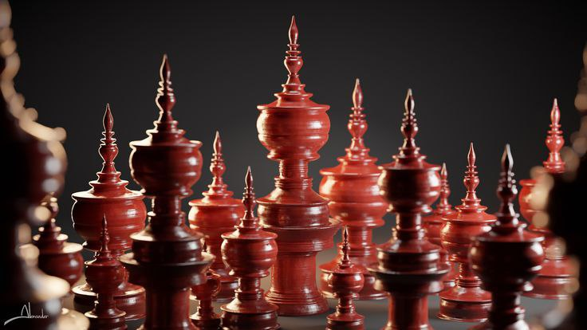
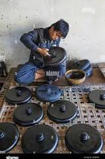
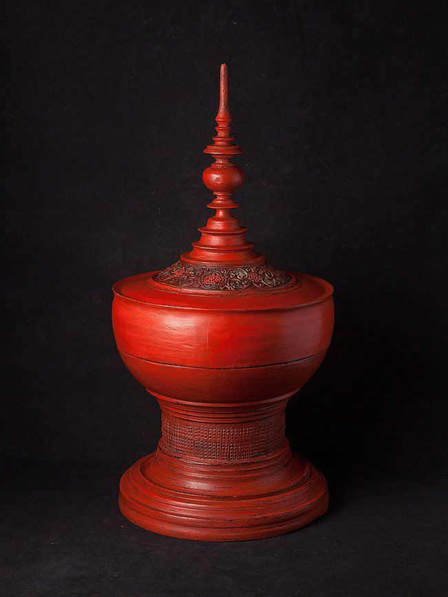
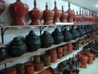

Plain Lacquerware, or Thoke-Yun, represents the most fundamental yet essential form of Myanmar's lacquer tradition. While other styles focus on surface decoration, Thoke-Yun celebrates the raw beauty of natural resin and the structural integrity of the piece. Historically, it has been the "people's lacquerware," serving as a bridge between royal art and everyday utility. From the humble monks' bowls to family dining sets, Thoke-Yun is a testament to the durability and timelessness of Myanmar craftsmanship.

The foundation is usually made of finely split bamboo (Tin-wa) or wood. For premium quality, horsehair is woven into the bamboo to create flexibility, allowing the piece to bend without cracking.
The item is coated with several layers of pure black lacquer. Each layer must be thoroughly dried in a dark, humid underground cellar (Myay-taik) for about a week. This slow drying process is crucial for the lacquer’s hardness.
After every coating cycle, the surface is polished using water and fine stone or sandpaper. This removes any imperfections, ensuring that the final product is as smooth as glass. For Thoke-Yun, the quality is judged by this smoothness.
The final layers define the variant. A-net-htae (Blackware) uses pure lacquer, while A-ni-htae (Redware) is achieved by mixing lacquer with high-grade cinnabar.

Thoke-Yun is famous for being incredibly light, waterproof, and resistant to heat and acid. In today’s world, it is highly valued by eco-conscious consumers as a sustainable, chemical-free alternative to plastic and synthetic tableware. Its minimalist look fits perfectly with modern home decor.

Kyaukka village, located near Monywa, is the most famous hub for a specific type of plain lacquerware known as "Kyaukka Yun." These are typically deep red (A-ni-htae) and are known for their sturdiness and large sizes, such as huge circular trays (Daung-lan) and storage containers.
While Bagan is famous for artistic engraving, it also produces high-quality black and red plain lacquerware. In villages like Myinkaba and Phwa-saw, you can find polished plain sets that focus on elegance and smoothness, often used in modern home decor and high-end dining